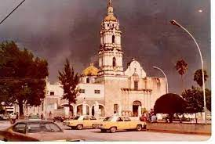
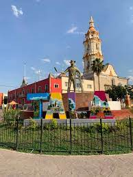

MUNICIPIO DE TALA, JALISCO
¿Que es Tala Jalisco?
"Tlallan", Tala o "tierra de labor".
Fue un señorío gobernado por Pitáloc quien tuvo bajo su jurisdicción a Ahuitzculco, Ocotán, Nextipac y Xocotán.
Se cree que su fundación data el año 1126.
Reseña Histórica Los peninsulares encontraron diseminadas en el Valle de Tala las ruinas de cués o adoratorios.

Tala Jalisco se caracteriza por el ingenio azucarero,
que gracias a eso tenemos como monumento a un cortador de caña en la plaza principal de Tala.
También contamos con el desfile de la caña y feria de la caña.

ES SITIO WEB SE ELABORO CON FINES EDUCATIVOS, COMO PARTE DE LA ACTIVIDAD DE LA MATERIA DE CONSTRUYE PAGINAS WEB
Profesor: Juan Carlos Mariscal Chavarin
Estudio en: CETIs No. 161
Nombre: Jocelyn Lizeth Cruz Hernandez.
Correo: joce09475@gmail.com